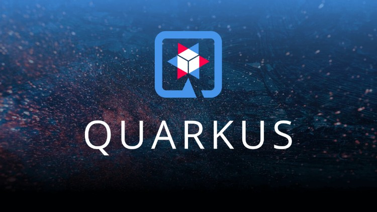
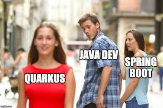
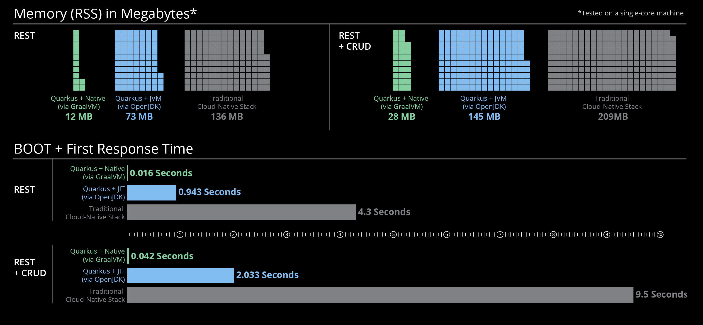
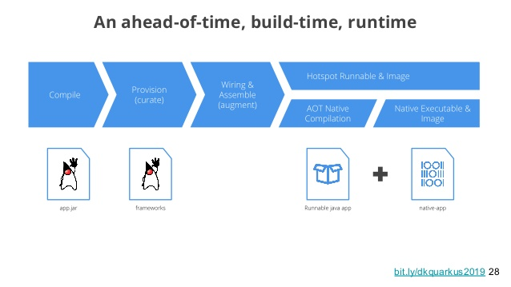

Microservices com Quarkus
SUPERSONIC SUBATOMIC JAVA
Palestrante: Rogério Fontes / @rogeriofontes
Sobre o palestrante:
APAIXONADO EM MANEIRAS E FORMAS ÁGEIS DE CRIAR CÓDIGO FONTE. PROGRAMANDO SEMPRE TOMANDO UM BOM CAFÉ E ESCUTANDO UM BELO E PESADO ROCK`N ROLL. TRABALHA A MAIS DE 10 ANOS COM JAVA E LINUX, PASSANDO POR ANDROID, PYTHON, PHP E AGORA COM O CORAÇÃO NO ANGULAR.JS E NODE.JS. PROFESSOR UNIVERSITÁRIO DE REDES DE COMPUTADORES, JAVA E DISPOSITIVOS MÓVEIS. JUGLEADER E CO-FUNDADOR DO UAIJUG (GRUPO DE USUÁRIOS DO TRIÂNGULO MINEIRO) E DO TRIÂNGULO HACKERSPACE. ENGENHEIRO DE MORDENIZAÇÃO - EVERIS/ITAÚ E APAIXONADO POR ESTUDOS MÚSICAIS.


"Quarkus: a next-generation Kubernetes native Java framework"
Calma já vamos no kotlin :)
Antes do Quarkus: O que é microsserviços?
Não existe bala de prata.
Tudo é em TI é tradeOff. [1]
Resumindo:
É um recurso unitário de uma regra de negócio, ou seja, um serviço com essa regra de negócio que podemos gerenciar com bancos de dados, deploy e escalas diferentes e separados.
E o Quarkus é Excelente para esse cenário.
Voltando para o Quarkus?
Quarkus é um framework Java nativo em Kubernetes e de stack completo que foi desenvolvido para máquinas virtuais Java (JVMs) e compilação nativa. Feito sob medida para o GraalVM e OpenJDK HotSpot.
Container First?
Podemos alem do comum fazer aplicações ambientes serverless e Kubernetes, Oferece um modelo unificado de programação reativa e imperativa. [2]
Container First?
O Quarkus foi desenvolvido com o princípio "Container First", o que acaba resultando em muito baixo uso de memória e tempo de inicialização extremamente rápido. [2]
Suporte do Quarkus para GraalVM / SubstrateVM:
O aplicativo é compilado em sua imagem nativa, que inicia significativamente muito mais rapidamente e leva muito menos pilha em comparação com a JVM padrão.
Processamento de metadados do tempo de construção:
O Quarkus contém as apenas as classes necessárias para tempo de execução, enquanto outros frameworks sobe todas as classes, que ficam suspensas por todo o ciclo de vida do aplicativo. Portanto, se você estiver usando o Quarkus, as classes não necessárias não serão carregadas na JVM e, por isso temos um uso de memória muito eficiente e um tempo de inicialização extremamente rápido.
API sem reflexão no Quarkus:
O Quarkus não usa a API de reflexão, reduzindo o tempo de inicialização e o uso de memória.
Resumindo:
Container First:
Mínimo necessário para rodar em containers.
Cloud Native:
Abraça os "12 factor architecture (https://12factor.net/pt_br/)" nos ambientes como Kubernetes.
Microservice First:
Traz tempo de inicialização muito rápido.
Algumas Features:
- Live Reload/Hot Reload.
- Programação Imperativa e Reativa.
- Excelente para Serverless e Microservices.
- Otimizado para Cloud.
- Baixo consumo de Memória.
- Startup mais rápido.
- Otimizado para processos de curta duração.
- Kubernetes/Cloud native.
- Suporta Padrões e bibliotecas antigas.
- Nível de eficiência do Go Lang.
Arquitetura:
O Quarkus usa ahead-of-time (AOT) para otimizar o uber jar para que ele inicie muito rapidamente e com menos RAM do que um microsserviço tradicional em execução na JVM
Performance de memória:

Performance: Quarkus vs Spring Boot
https://www.youtube.com/watch?v=oz-QSGy1DSo
Hot Reload:
Ao executar no modo de desenvolvimento (./mvn compile quarkus:dev), Quarkus vai forcecer o recurso de hot-reload.
build
Podemos usar o Quarkus Gerando Imagem nativa:
./mvnw package -Pnative

Qual a vantagem?
-
Isso pode levar alguns segundos para ser concluído.
Como as imagens nativas tentam criar todo o código AOT para inicializar mais rapidamente, como resultado, teremos tempos de construção mais longos.
Podemos executar ./mvnw Verify -Pnative para verificar se nosso artefato nativo foi construído corretamente.
Especificações disponíveis:
- Beans Validations;
- CDI;
- Logs;
- Microprofile Config;
- Microprofile Fault Tolerance;
- Microprofile Healt;
- Microprofile JWT;
- Microprofile Metrics;
- Microprofile OpenAPI;
- Microprofile OpenTracing;
- Microprofile TypeSafe Rest Client;
- JAX-RS;
- JPA/JDBC;
- Servlets;
- Transactions;
E ainda acesso aos principais frameworks e ferramentas do mercado como:
- Apache Camel;
- Apache Kafka;
- Hibernate;
- Infinispan;
- Jaeger;
- Kubernetes;
- Netty;
- Prometheus;
- RESTEasy;
- Vert.x;
Setup:
[2] - https://www.redhat.com/pt-br/topics/microservices/what-are-microservices
https://quarkus.io/blog/runtime-performance/
https://quarkus.io/guides/performance-measure
https://www.eclipse.org/community/eclipse_newsletter/2019/may/quarkus.php
https://redhat-developer-demos.github.io/quarkus-tutorial/quarkus-tutorial/index.html